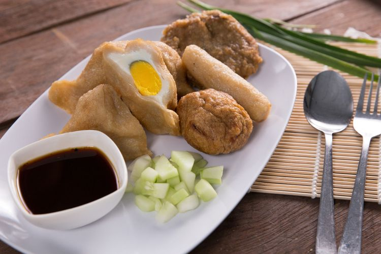

Loading...
Food Menu
Food Menu
Most Popular Kuliner
Teh Tarik $15
Teh tarik adalah minuman teh yang dibuat dengan mencampurkan teh dan susu, lalu ditarik (dijadikan) dari satu wadah ke wadah lain untuk menghasilkan busa. Rasanya manis dan creamy.Kopi Tubruk $5
Kopi ini biasanya disajikan dengan gula atau tanpa gula, dan sering dinikmati dengan makanan ringan.
Cendol $10
Cendol adalah minuman segar yang terbuat dari tepung beras, santan, dan gula merah. Biasanya disajikan dengan es serut dan potongan buah.Es Campur $5
Es campur adalah campuran berbagai bahan seperti buah, agar-agar, dan sirup, disajikan dengan es serut. Ini adalah minuman yang sangat segar, terutama di cuaca panas.
Soda Gembira $15
Soda gembira adalah minuman campuran soda, susu kental manis, dan sirup. Ini adalah minuman yang manis dan berwarna cerah, sering dinikmati di berbagai acara.
Bajigur $13
Bajigur adalah minuman hangat yang terbuat dari santan, gula merah, dan biasanya dicampur dengan jahe. Minuman ini sangat cocok dinikmati saat cuaca dingin.Wedang Uwuh $15
Wedang uwuh (Hanacaraka: ꦮꦺꦢꦁꦲꦸꦮꦸꦃ) adalah minuman dengan bahan-bahan yang berupa dedaunan mirip dengan rempah.Teh Telur $10
teh telur adalah minuman manis khas Sumatera Barat yang dapat dijumpai di lapau, warung tradisional Minangkabau hingga restoran Padang.
Rendang $25
Rendang adalah hidangan berbahan dasar daging yang dihasilkan dari proses memasak suhu rendah dalam waktu lama dengan menggunakan aneka rempah-rempah dan santan.
Rawon $15
Rawon adalah masakan khas Indonesia yang berupa sup daging berkuah hitam dengan campuran bumbu khas yang menggunakan kluwek.Gulai Ikan Patin $15
Gulai Patin merupakan masakan khas Jambi dimana masyarakat lokalnya sangat mempopulerkan makanan ini.
Gudeg $15
Gudeg adalah hidangan khas Daerah Istimewa Yogyakarta yang terbuat dari nangka muda yang dimasak dengan santan.
Ayam Betutu $15
Ayam Betutu adalah makanan tradisional khas Bali yang terbuat dari ayam atau bebek utuh yang berisi bumbu, kemudian dipanggang dalam api sekam.Tengkleng $15
Tengkleng adalah masakan sejenis sup dengan bahan utama tulang kambing khas dari Daerah Istimewa Yogyakarta.Coto Makassar $15
Coto Makassar adalah makanan khas Makassar, Sulawesi Selatan yang terbuat dari daging serta jeroan sapiPendap $15
Pendap atau ikan pais merupakan makanan khas dari Bengkulu Selatan, Bengkulu yang memiliki cita rasa pedas dan gurih.Nasi Goreng $5
Nasi goreng merupakan sajian nasi yang digoreng dalam sebuah wajan atau penggorengan yang menghasilkan cita rasa berbeda karena dicampur dengan bumbu-bumbu seperti garam, bawang putih, bawang merah, merica, rempah-rempah tertentu dan kecap manis.

Pempek $3
Pempek adalah makanan khas Palembang, Sumatera Selatan. Proses pembuatannya yakni dibuat dari daging ikan yang digiling lembut, dicampur tepung kanji atau tepung sagu, serta dengan penambahan komposisi bahan lain seperti telur, bawang putih yang dihaluskan, penyedap rasa, dan garam. Pempek biasanya disajikan dengan kuah yang disebut cuko yang memiliki rasa asam, manis, dan pedasBakso Mercon $5
Bakso mercon merupakan salah satu kreasi bakso yang dihidangkan dengan cita rasa pedas atau super pedas.Sate Ayam $5
Sate ayam adalah makanan khas Indonesia. Sate ayam dibuat dari daging ayam. Pada umumnya sate ayam dimasak dengan cara dipanggang menggunakan arang dan disajikan dengan pilihan bumbu kacang atau bumbu kecap.
Kerak Telor $5
Kerak telur adalah makanan asli daerah Jakarta (Betawi), dengan bahan-bahan beras ketan putih, telur ayam atau bebek, ebi (udang kering yang diasinkan), ditambah bawang merah goreng, lalu diberi bumbu yang dihaluskan berupa kelapa sangrai, cabai merah, kencur, jahe, kunyit,sereh halus, merica butiran, garam dan gula pasir.Martabak Telor $5
Martabak telur merupakan panganan dengan rasa gurih. Sayur, daging, dan berbagai bumbu lainnya digabung menjadi satu dalam sebuah kulit adonan padat yang ditipiskan secukupnya, kemudian dilipat, kemudian digoreng hingga matang.